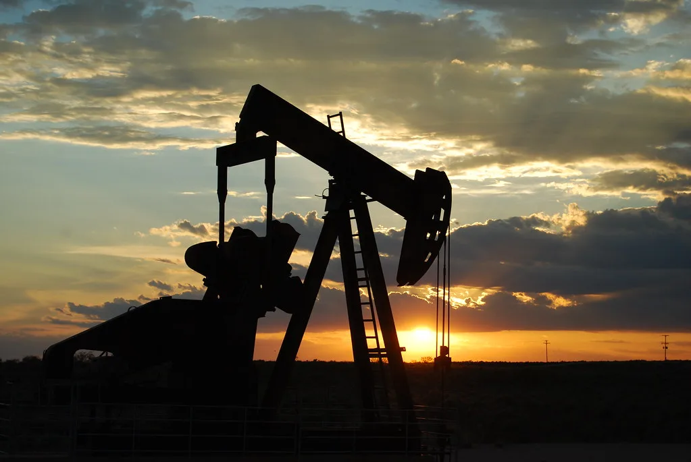
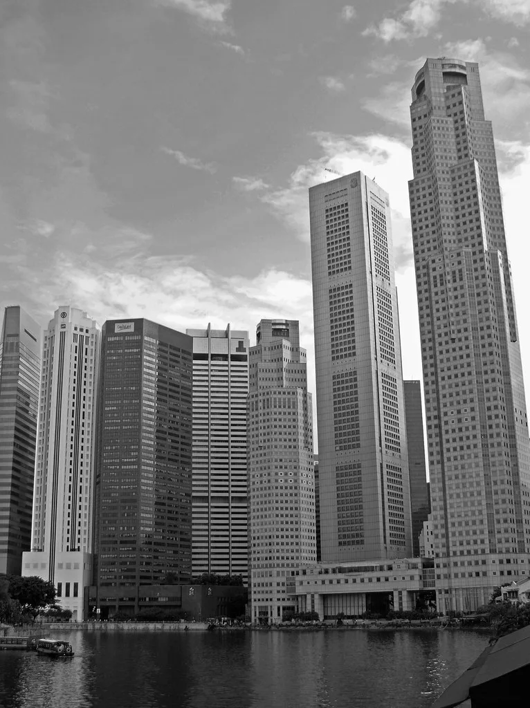

코스피, 국제유가·美 금리 급등에 7000선 재차 반납…6909선 마감
코스피가 11일 전 거래일보다 124.01포인트(1.76%) 내린 6909.91에 장을 마쳤다. 장 초반에는 낙폭이 3%를 넘어서며 6800선까지 밀렸지만, 오후 들어 매수세가 유입되며 낙폭을 절반 가까이 줄여 6900선은 지켰다. 코스닥지수도 16.28포인트(1.95%) 하락한 820.64로 거래를 마감했다. 지수가 종가 기준 7000선 아래로 내려온 것은 이달 들어 여러 차례 반복되고 있는 흐름으로, 8월 두 차례 장중 7000선을 넘어섰음에도 종가 기준 안착에는 번번이 실패해 온 코스피가 다시 한번 문턱에서 발목을 잡힌 셈이다.
하락의 직접적인 배경은 국제유가와 미국 국채금리의 동반 급등이다. 미국과 이란의 군사적 긴장이 다시 고조되면서 호르무즈 해협 인근에서 유조선과 군함을 겨냥한 공격이 오간 것으로 전해졌고, 이 여파로 브렌트유는 배럴당 101달러를 넘어서며 지난 7월 이후 처음으로 100달러 선을 재돌파했다. 동시에 미국 10년물 국채금리가 4.95%까지 치솟아 5%에 근접하면서, 위험자산인 주식에 대한 투자심리가 급격히 위축됐다. 물가 상승 압력과 고금리 장기화 우려가 한꺼번에 겹친 결과라는 분석이 나온다.

시가총액 상위 반도체주도 약세를 피하지 못했다. 삼성전자는 전 거래일 대비 9500원(3.53%) 내린 25만9500원에, SK하이닉스는 4만1000원(2.21%) 하락한 181만2000원에 각각 거래를 마쳤다. 다만 장중 반도체 수출 호조 소식이 전해지고 두 회사의 대규모 자사주 매입 물량이 매수세로 유입되면서 낙폭이 일부 만회됐다. 삼성전자는 임직원 주식보상 재원 마련을 위해 8월 말부터 11월까지 약 15조원 규모의 자사주를 장내 매입 중이며, SK하이닉스도 올해 40조원 규모의 자사주를 취득해 전량 소각한다는 방침을 밝힌 바 있어, 이런 물량이 수급의 새로운 버팀목 역할을 하고 있다는 평가다.

수급 측면에서는 외국인과 기관이 동반 매도에 나서며 지수 하락을 이끌었다. 이날 외국인은 2조3040억원, 기관은 1조2235억원어치를 각각 순매도한 반면, 개인 투자자는 1조8658억원을 순매수하며 지수 하단을 방어했다. 자사주 매입 물량이 '기타법인' 순매수로 잡히면서 외국인과 기관의 매도 물량을 상당 부분 흡수하고 있다는 점도 이번 조정 국면에서 눈에 띄는 변화로 꼽힌다.
증권가에서는 이번 조정이 반도체 업황 개선이나 실적 전망 훼손에 따른 것이 아니라 유가·금리라는 외부 변수에서 비롯된 만큼, 변수가 진정되면 재차 7000선에 도전할 여력은 남아 있다는 시각이 우세하다. 다만 골드만삭스가 미·이란 사태가 악화할 경우 국제유가가 배럴당 120달러까지 치솟을 수 있다고 경고한 만큼, 중동발 지정학적 리스크가 단기간에 해소되지 않을 경우 변동성 장세가 이어질 수 있다는 우려도 함께 나온다.
시장의 시선은 곧 발표될 미국 8월 소비자물가지수(CPI)로 향하고 있다. 이번 지표는 미 연방준비제도의 향후 금리 경로를 가늠할 핵심 변수로 꼽히는 만큼, 예상치를 웃도는 물가 상승률이 확인될 경우 국채금리 상승과 위험자산 회피 심리가 추가로 강화될 수 있다는 관측이 나온다. 반대로 물가 상승세가 둔화한 것으로 나타나면 코스피가 다시 7000선 안착을 시도할 가능성도 거론된다. 외국인 수급과 미국 장기금리 흐름이 당분간 코스피 방향성을 결정지을 핵심 변수가 될 전망이다.